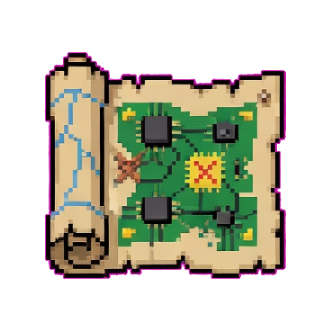

ChatPCB
Connecting
Start a project
Active project
Circuit
Layout
제품화
프로젝트를 만들면 Circuit 컨셉부터 시작합니다.
Create a project to send a circuit request.
Technical details

회로 초안이 준비됐어요
적용을 누르기 전에는 스키매틱 파일이 바뀌지 않습니다.
No patch preview active.